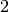

Stereoscopic reconstruction from VHR optical images pair¶
This section describes how to convert pair of stereo images into elevation information.
The standard problem of terrain reconstruction with available OTB Applications contains the following steps:
- Estimation of displacements grids for epipolar geometry transformation
- Epipolar resampling of the image pair using those grids
- Dense disparity map estimation
- Projection of the disparities on a Digital Surface Model (DSM)
Let’s go to the third dimension!
Estimate epipolar geometry transformation¶
The aim of this step is to generate resampled grids to transform images into epipolar geometry. Epipolar geometry is the geometry of stereo vision. The operation of stereo rectification determines transformations to apply to each image such that pairs of conjugate epipolar lines become collinear, parallel to one of the image axes and aligned. In this geometry, the objects present on a given row of the left image are also located on the same row in the right image.
Applying this transformation reduces the problem of elevation (or stereo correspondences determination) to a 1-D problem. We have two sensor images and over the same area (the stereo pair) and we assume that we know the localization functions (forward and inverse) associated with each images.
The forward function allows to go from the image referential to the geographic referential. For the first image, this function will be noted:
where is the elevation hypothesis,  are the pixel
coordinates in image 1 and are geographic coordinates. As you
can imagine, the inverse function allows to go from geographic
coordinates to the image geometry.
are the pixel
coordinates in image 1 and are geographic coordinates. As you
can imagine, the inverse function allows to go from geographic
coordinates to the image geometry.
For the second image, in that case, the expression of the inverse function is:

Using jointly the forward and inverse functions from the image pair, we can construct a co-localization function between the position of a pixel in the first and its position in the second one:
The expression of this function is:
The expression is not really important, what you need to understand is that if we are able to determine for a given pixel in image 1 the corresponding pixel in image 2, as we know the expression of the co-localization function between both images, we can determine by identification the information about the elevation (variable h in the equation)!
We now have the mathematical basis to understand how 3-D information can be extracted by examination of the relative positions of objects in the two 2-D epipolar images.
The construction of the two epipolar grids is a little bit more complicated in the case of VHR optical images. That is because most of passive remote sensing from space use a push-broom sensor, which corresponds to a line of sensors arranged perpendicularly to the flight direction of the spacecraft. This acquisition configuration implies a slightly different strategy for stereo-rectification (see here ).
We will now explain how to use the StereoRectificationGridGenerator application to produce two images which are deformation grids to resample the two images in epipolar geometry.
otbcli_StereoRectificationGridGenerator -io.inleft image1.tif
-io.inright image2.tif
-epi.elevation.default 50
-epi.step 10
-io.outleft grid_image1.tif
-io.outright grid_image2.tif
The application estimates the displacement to apply to each pixel in both input images to obtain epipolar geometry. The application accepts a ‘step’ parameter to estimate displacements on a coarser grid. Here we estimate the displacements every 10 pixels. This is because in most cases with a pair of VHR and a small angle between the two images, this grid is very smooth. Moreover, the implementation is not streamable and uses potentially a lot of memory. Therefore it is generally a good idea to estimate the displacement grid at a coarser resolution.
The application outputs the size of the output images in epipolar geometry. Note these values, we will use them in the next step to resample the two images in epipolar geometry.
In our case, we have:
Output parameters value:
epi.rectsizex: 4462
epi.rectsizey: 2951
epi.baseline: 0.2094
The epi.baseline parameter provides the mean value (in pixels per meters) of the baseline to sensor altitude ratio (also called B/H in the litterature). It can be used to do an approximate conversion of disparities to physical elevation :
where is the reference altitude used to generate the epipolar
grids (here: 50m), and  is a disparity value (in pixels) for a given
object between images 1 and 2.
is a disparity value (in pixels) for a given
object between images 1 and 2.
We can now move forward to the resampling in epipolar geometry.
Resample images in epipolar geometry¶
The former application generates two grids of displacements. The GridBasedImageResampling allows to resample the two input images in the epipolar geometry using these grids. These grids are intermediary results not really useful on their own in most cases. This second step only consists in applying the transformation to resample both images. This application can obviously be used in a lot of other contexts.
The two commands to generate epipolar images are:
otbcli_GridBasedImageResampling -io.in image1.tif
-io.out epi_image1.tif
-grid.in grid_image1.tif
-out.sizex 4462
-out.sizey 2951
otbcli_GridBasedImageResampling -io.in image2.tif
-io.out epi_image2.tif
-grid.in grid_image2.tif
-out.sizex 4462
-out.sizey 2951
As you can see, we set sizex and sizey parameters using output values given by the StereoRectificationGridGenerator application to set the size of the output epipolar images. The two epipolar images should have the same size.
Figure 1: Extract of resample image1 and image2 in epipolar geometry over Pyramids of Cheops. ©CNES 2012
We obtain two images in epipolar geometry, as shown in Figure 1. Note that the application allows to resample only a part of the image using the -out.ulx and -out.uly parameters.
Disparity estimation: Block matching along epipolar lines¶
Finally, we can begin the stereo correspondences lookup process!
Things are becoming a little bit more complex but do not worry. First, we will describe the power of the BlockMatching application.
The resampling of our images in epipolar geometry allows us to constrain the search along a 1-dimensional line as opposed to both dimensions, but what is even more important is that the disparities along the lines, i.e. the offset along the lines measured by the block-matching process can be directly linked to the local elevation
An almost complete spectrum of stereo correspondence algorithms has been published and it is still augmented at a significant rate! The Orfeo ToolBox implements different local strategies for block matching:
- Sum of Square Distances block-matching (SSD)
- Normalized Cross-Correlation (NCC)
- Lp pseudo-norm (LP)
An other important parameter (mandatory in the application!) is the range of disparities. In theory, the block matching can perform a blind exploration and search for a infinite range of disparities between the stereo pair. We need now to evaluate a range of disparities where the block matching will be performed (in the general case from the deepest point on Earth, the Challenger Deep . to the Everest summit!)
We deliberately exaggerated but you can imagine that without a smaller range the block matching algorithm can take a lot of time. That is why these parameters are mandatory for the application and as a consequence we need to estimate them manually. This is pretty simple using the two epipolar images.
In our case, we choose one point on a flat area. Its coordinates are in epipolar image 1 and in epipolar image 2. We then select a second point on a higher region (in our case a point near the top of the Pyramid of Cheops!). The image coordinates of this pixel are in image 1 and in image 2. We check the difference between column coordinates in images 1 and 2 in order to derive the useful disparity interval for horizontal exploration. In our case, this interval is at least (the convention for the sign of the disparity range is from image 1 to image 2).
Note that this exploration interval can be reduced using an external DEM in the StereoRectificationGridGenerator application. Indeed, the disparities measured between the epipolar images are relative to the reference altitude used when computing epipolar grids (hence, defining the epipolar geometry). Using an external DEM should produce epipolar images where altitude deviations from the reference are smaller, and as a consequence, disparities closer to 0.
Regarding the vertical disparity, in the first step we said that we reduced the
problem of 2D exploration to a 1D problem, but this is not completely true in
general cases. There might be small disparities in the vertical direction which
are due to parallax errors (i.e. epipolar lines exhibit a small shift in
the vertical direction, around 1 pixel). In fact, the exploration is
typically smaller along the vertical direction than along
the horizontal one. You can also estimate them on the epipolar pair (in
our case we use a range of to  ).
).
One more time, take care of the sign for minimum and maximum disparities (always from image1 to image2).
The command line for the BlockMatching application is:
otbcli_BlockMatching -io.inleft epi_image1.tif
-io.inright epi_image2.tif
-io.out disparity_map_ncc.tif
-bm.minhd -45
-bm.maxhd 5
-bm.minvd -1
-bm.maxvd 1
-mask.inleft epi_mask_image1.tif
-mask.inright epi_mask_image2.tif
-io.outmetric 1
-bm.metric ncc
-bm.subpixel dichotomy
-bm.medianfilter.radius 5
-bm.medianfilter.incoherence 2.0
The application creates by default a two bands image: the horizontal and vertical disparities.
The BlockMatching application gives access to a lot of other powerful functionalities to improve the quality of the output disparity map.
Here are a few of these functionalities:
io.outmetric: if the optimal metric values image is activated, it will be concatenated to the output image (which will then have three bands: horizontal disparity, vertical disparity and metric value)
bm.subpixel: Perform sub-pixel estimation of disparities
mask.inleft and mask.inright: you can specify a no-data value which will discard pixels with this value (for example the epipolar geometry can generate large part of images with black pixels). This mask can be easily generated using the BandMath application:
otbcli_BandMath -il epi_image1.tif -out epi_mask_image1.tif -exp "im1b1<=0 ? 0 : 255"
otbcli_BandMath -il epi_image2.tif -out epi_mask_image2.tif -exp "im1b1<=0 ? 0 : 255"
mask.variancet: The block matching algorithm has difficulties to find matches on uniform areas. We can use the variance threshold to discard those regions and speed-up computation time.
bm.medianfilter.radius and bm.medianfilter.incoherence: Applies a median filter to the disparity map. The median filter belongs to the family of nonlinear filters. It is used to smooth an image without being biased by outliers or shot noise. The radius corresponds to the neighbourhood where the median value is computed. A detection of incoherence between the input disparity map and the median-filtered one is performed (cases where the absolute difference is greater than the threshold, whose default value is 1). Both parameters must be defined in the application to activate the filter.
Of course all these parameters can be combined to improve the disparity map.
Figure 2: Horizontal disparity and optimal metric map
From disparity to Digital Surface Model¶
Using the previous application, we evaluated disparities between epipolar images. The next (and last!) step is now to transform the disparity map into an elevation information to produce an elevation map. It uses as input the disparity maps (horizontal and vertical) to produce a Digital Surface Model (DSM) with a regular sampling. The elevation values are computed from the triangulation of the “left-right” lines of sight for each matched pixels. When several elevations are available on a DSM cell, the highest one is kept.
First, an important point is that it is often a good idea to rework the disparity map given by the BlockMatching application to only keep relevant disparities. For this purpose, we can use the output optimal metric image and filter disparities with respect to this value.
For example, if we used Normalized Cross-Correlation (NCC), we can keep only disparities where optimal metric value is superior to . Disparities below this value can be considered as inaccurate and will not be used to compute elevation information (the -io.mask parameter can be used for this purpose).
This filtering can be easily done with OTB Applications .
We first use the BandMath application to filter disparities according to their optimal metric value:
otbcli_BandMath -il disparity_map_ncc.tif
-out thres_disparity.tif uint8
-exp "im1b3>0.9 ? 255 : 0"
Now, we can use the DisparityMapToElevationMap application to compute the elevation map from the filtered disparity maps.
otbcli_DisparityMapToElevationMap -io.in disparity_map_ncc.tif
-io.left image1.tif
-io.right image2.tif
-io.lgrid grid_image1.tif
-io.rgrid grid_image2.tif
-io.mask thres_disparity.tif
-io.out elevation_map.tif
-hmin 10
-hmax 400
-elev.default 50
It produces the elevation map projected in WGS84 (EPSG code:) over the ground area covered by the stereo pair. Pixels values are expressed in meters.
Figure 3: Extract of the elevation map over Pyramids of Cheops.
The Figure 3 shows the output DEM from the Cheops pair.
One application to rule them all in multi stereo framework scheme¶
An application has been created to fuse one or multiple stereo reconstruction(s) using all-in-one approach: StereoFramework . It computes the DSM from one or several stereo pairs. First of all the user has to choose his input data and defines stereo couples using -input.co string parameter. Each couple is defined by 2 image indexes “a b” (starting at 0) separated by a space character. The different pairs are concatenated with coma. For instance “0 1,0 2” will define the image pairs “first with second”, and “first with third”. If left blank, images are processed by pairs (which is equivalent as using “ 0 1,2 3,4 5 ” …). In addition to the usual elevation and projection parameters, main parameters have been split in groups detailed below:
output: Output parameters (DSM resolution, NoData value, Cell Fusion method)
- Output projection map selection.
- Spatial Sampling Distance of the output DSM in meters
- DSM empty cells are filled with a float value (-32768 by default)
- Choice of fusion strategy in each DSM cell (max, min, mean, acc)
- Output DSM
- Extent of output DSM
stereorect: Direct and inverse stereorectification grid subsampling parameters
- Step of the direct deformation grid (in pixels)
- Sub-sampling of the inverse epipolar grid
bm: Block Matching parameters.
- Block-matching metric choice (robust SSD, SSD, NCC, Lp Norm)
- Radius of blocks for matching filter (in pixels,  by default)
- Minimum altitude below the selected elevation source (in meters, -20.0 by default)
- Maximum altitude above the selected elevation source (in meters, 20.0 by default)
postproc: Post-Processing parameters
- Use bijection consistency. Right to Left correlation is computed to validate Left to Right disparities. If bijection is not found, pixel is rejected
- Use median disparities filtering (disabled by default)
- Use block matching metric output to discard pixels with low correlation value (disabled by default, float value)
mask: Compute optional intermediate masks.
- Mask for left input image (must have the same size for all couples)
- Mask for right input image (must have the same size for all couples)
- This parameter allows to discard pixels whose local variance is too small. The size of the neighborhood is given by the radius parameter. (disabled by default)
Stereo reconstruction good practices¶
The parameters for altitude offset are used inside the application to derive the minimum and maximum horizontal disparity exploration, so they have a critical impact on computation time. It is advised to choose an elevation source that is not too far from the DSM you want to produce (for instance, an SRTM elevation model). Therefore, the altitude from your elevation source will be already taken into account in the epipolar geometry and the disparities will reveal the elevation offsets (such as buildings). It allows you to use a smaller exploration range along the elevation axis, causing a smaller exploration along horizontal disparities and faster computation.
To reduce time consumption it would be useful to crop all sensor images to the same extent. The easiest way to do that is to choose an image as reference, and then apply ExtractROI application on the other sensor images using the fit mode option.
Algorithm outline¶
The following algorithms are used in the application: For each sensor pair
- Compute the epipolar deformation grids from the stereo pair (direct and inverse)
- Resample into epipolar geometry with BCO interpolator
- Create masks for each epipolar image: remove black borders and resample input masks
- Compute horizontal disparities with a block matching algorithm
- Refine disparities to sub-pixel precision with a dichotomy algorithm
- Apply an optional median filter
- Filter disparities based on the correlation score (optional) and exploration bounds
- Translate disparities in sensor geometry
- Convert disparity map to 3D map
Then all 3D maps are fused to produce a DSM with desired geographic or cartographic projection and parametrizable extent.